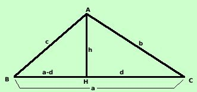

Consideriamo un triangolo qualunque: esso avra' comunque due angoli acuti:
chiamiamoli B e C e consideriamo la figura:

Nota: se metto al posto di B oppure C un angolo ottuso invece
delle somme nella dimostrazione dovro' fare le differenze
Abbiamo come misure note:
AB = c
BC = a
CA = b
Perimetro = 2p
p = semiperimetro
Considero la perpendicolare AH a BC e pongo AH = h e HC
= d; quindi AH = a-d
Per trovare l'area devo trovare il valore dell'altezza mediante i
dati noti a, b e c: prima calcolo le due parti AH
ed HC della base, poi, tramite questi, calcolo il valore dell'altezza
h
-
Calcolo il valore di HC = d
Il triangolo ABH e' rettangolo per costruzione, quindi posso applicare il
teorema di Pitagora
c2 = (a-d)2 + h2
=a2 - 2ad + d2 + h2=
ma siccome anche il triangolo AHC e' rettangolo so che vale
d2 + h2 = b2 ed ottengo
c2 = a2 - 2ad + b2
Ricavo d
2ad = a2 +
b2 -c2
| d = |
a2 +
b2 -c2
----------------------
2a
|
- Questo valore trovato mi da' anche il valore di BH infatti
| BH = a - d = a - |
a2 +
b2 -c2
----------------- =
2a
|
2a2 - a2 -
b2 + c2
----------------------- =
2a
|
a2 +
c2 - b2
----------------------- =
2a
|
- Calcolo ora il valore di h
Il triangolo ACH e' rettangolo per costruzione, quindi posso applicare il
teorema di Pitagora
h2 = b2 - d2
=
sostituisco a d il valore trovato prima
| h2 = b2 -
|
a2 +
b2 - c2
[
----------------- ]2 =
2a
|
Eseguo il quadrato al denominatore e faccio il minimo comune
multiplo
| =
|
4a2b2
- (a2 +
b2 - c2)2
------------------------------- =
4a2
|
Sopra posso scomporre come differenza di due quadrati
[2ab + (a2 +
b2 - c2)]·[2ab - (a2 +
b2 - c2)]
= ---------------------------------------------------------- =
4a2
|
Tolgo le parentesi interne
[2ab + a2 +
b2 - c2][2ab - a2 -
b2 + c2]
= ---------------------------------------------------------- =
4a2
|
Posso raccogliere dentro parentesi i termini che sono quadrati di un
binomio
[ (a2 + 2ab +
b2) - c2][-(a2 - 2ab +
b2) + c2]
= ---------------------------------------------------------- =
4a2
|
[(a+b)2 -
c2)][ c2 -(a-b)2]
= -------------------------------------------
4a2
|
Scompongo ancora come differenza di quadrati entro le parentesi quadre
ed ottengo
|
h2
|
(a+b+c)·(a+b-c)·(c+a-b)·(c-a+b)
= ------------------------------------------- =
4a2
|
Ora abbiamo che, per ogni fattore trovato vale
a+b+c = 2p
a+b-c = a+b+c - 2c = 2p - 2c
c+a-b = a+c-b= a+b+c - 2b = 2p -2b
c-a+b = c+b-a = a+b+c - 2a = 2p -2a
Quindi, sostituendo ottengo
|
h2
|
2p·(2p-2c)·(2p-2b)·(2p-2a)
= ------------------------------------------- =
4a2
|
Raccolgo i 2 dentro parentesi, li porto fuori e li motiplico
|
h2
|
16p·(p-c)·(p-b)·(p-a)
= ----------------------------- =
4a2
|
semplifico per 4
4p·(p-c)·(p-b)·(p-a)
= -------------------------------
a2
|
Estraendo la radice ottengo il valore di h
Ora possiamo trovare il valore dell'area
| As = |
a · h
----------- =
2
|
a · 2
= -------
2
|
 |
 |
|
| p(p-a)(p-b)(p-c) |
| |
| a
|
E quindi, semplificando
| As =
|
|
|
|
| p(p-a)(p-b)(p-c) |
Come vedi, se la formula non viene dimostrata c'e' la buona ragione che la di
mostrazione e' troppo complicata: e' per questo che io chiamo la formula
"famigerata" perche' si sa che esiste sin dalla scuola media, pero' non
si dimostra mai
|